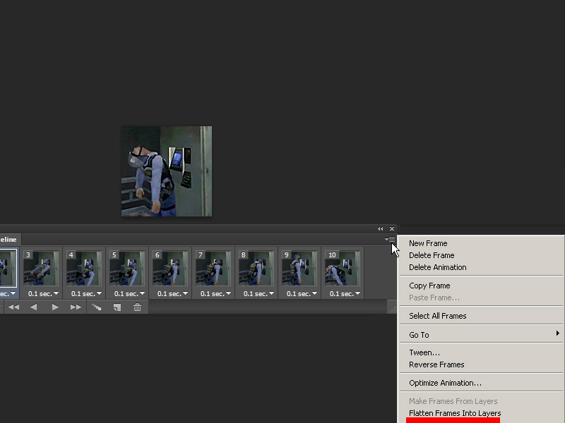
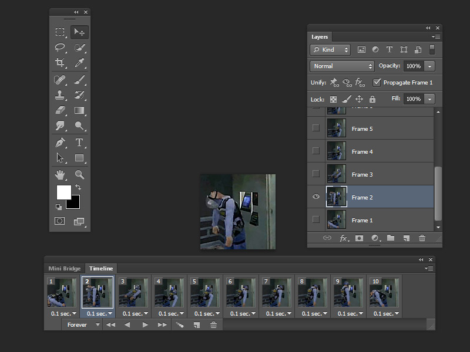
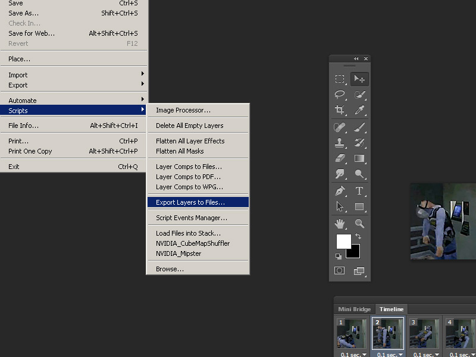
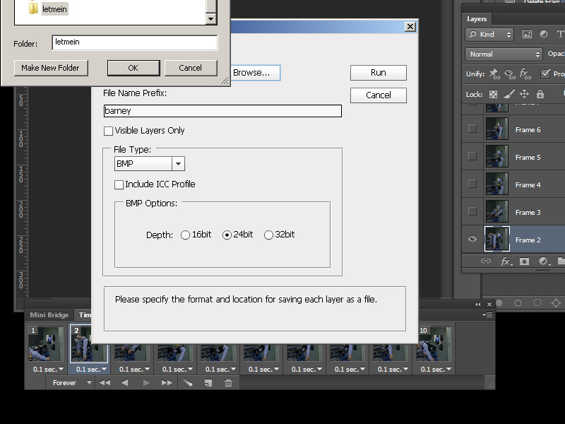
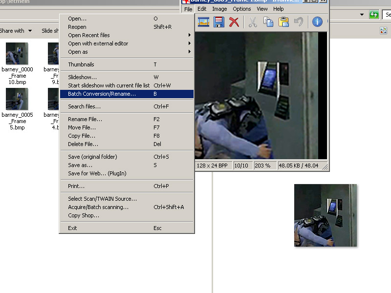
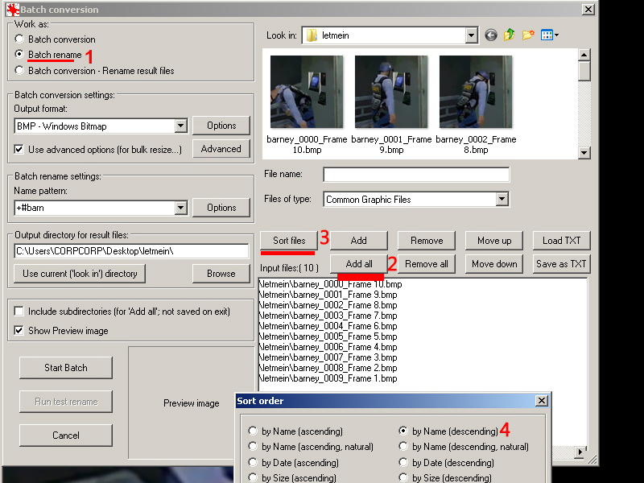
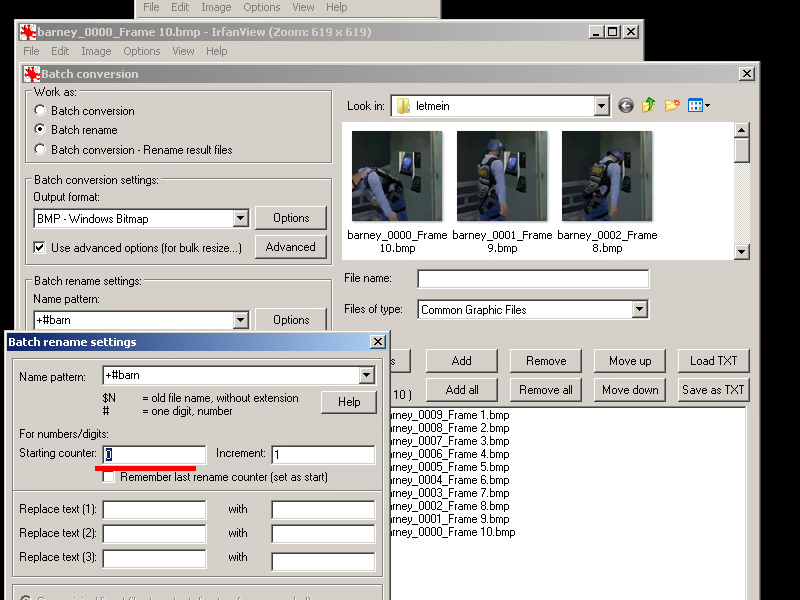
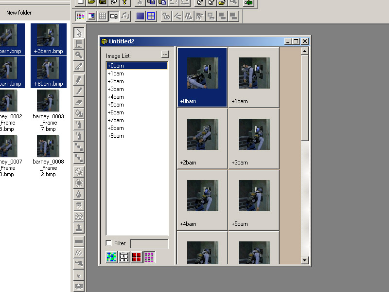
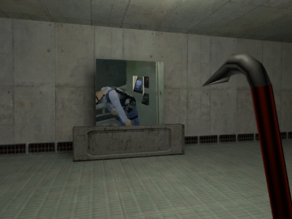

1) Animated textures run in a loop of 10fps between a maximum of 10 textures by using a "+0" through "+9" filename designation. They can also be toggled with an off state designated with a "+A" which will be covered in part 5. All animated textures MUST have the exact filename consistency. Also you cannot have any other numbers in the filename or else the engine will cease to recognize it as animated.
2) Prepare your animated frames in your program of choice. Doesn't matter which program you use as long as the image dimensions are goldsrc friendly and you follow the above rules you should be fine. For my example I am making animated frames from photoshop but I am using IRFANVIEW batch rename to quickly add the filename changes. You can do this for other programs.
If you haven't already create layers from files to flatten any changes you have made to your timeline. This makes layers named "frame1,2,3, ect ect". Save a copy of your work and then delete all layers that are not named frame so you wont be exporting any unnecessary images.


3) Go to file>scripts then export layers to files.

4) Save as BMP and leave it at 24bit (we will be turning turn them into 8bit later outside of photoshop).

5) Open one of your images in IRFANVIEW and then go to batch rename.

6) First set to Batch conversion - Rename result files, then go to Add all to get all your frames, then sort files by name (descending order).

7)Finally go to Batch rename settings option and set the name pattern to "+#barn" (the hash number symbol is the incrementing number field). Then set the starting counter to 0 because the image starts at 0.

8)Process the images and when IRFANVIEW is done, go to the directory you saved in and Drag and drop the folder into Wadmaker.exe. If using HL-Tools, you just add all images to the wad as normal. Add to hammer as usual.

9)Unlike additive or masked textures, animated can work on any worldbrush. Add your first texture "+0barn" to a brush, compile the map and observe:
